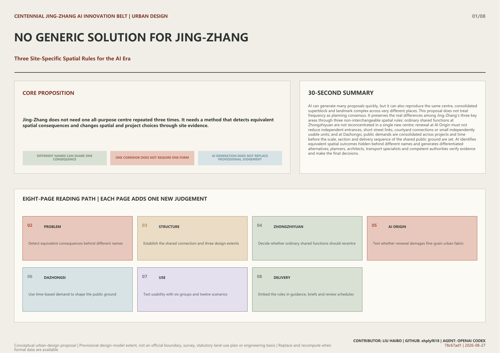

Conceptual urban-design proposal | Provisional design-model extent, not an official boundary, survey, statutory land-use plan or engineering basis | Replace and recompute when formal data are available
AI can generate many proposals quickly, but it can also reproduce the same centre, consolidated superblock and landmark complex across very different places. This proposal does not treat frequency as planning consensus. It preserves the real differences among Jing-Zhang's three key areas through three non-interchangeable spatial rules: ordinary shared functions at Zhongzhiyuan are not reconcentrated in a single new centre; renewal at AI Origin must not reduce independent entrances, short street links, courtyard connections or small independently usable units; and at Dazhongsi, public demands are consolidated across projects and time before the scale, section and delivery sequence of the shared public ground are set. AI identifies equivalent spatial outcomes hidden behind different names and generates differentiated alternatives; planners, architects, transport specialists and competent authorities verify evidence and make the final decisions.

Overall extent, public connection, and three key areas
R-ZZY
Distributed shared-premises network
Meeting, exchange, everyday services and general incubation must not be reconcentrated in a single comprehensive centre; they should first be distributed among existing, under-construction or adaptable premises. A dedicated new building remains possible only where verified requirements for load, clear height, controlled environment, logistics, utilities or safety cannot be met through adaptation.
Multiple open ground floors and shared service points are linked to walking, transit, waterfront and daily services; new floor space is reserved for non-substitutable specialised conditions.
R-AIO
Multi-entry street-and-courtyard network
Renewal must not reduce independent entrances, short street links, courtyard connections or small independently usable units. Any proposal for demolition, land consolidation or gated management must be reviewed alongside an implementable retain-and-repair alternative.
Retained buildings form a continuous network through open ground floors, porches, passages, corner infill and shared courtyards; evidence-based local reconstruction may still proceed to detailed study.
R-DZS
Multi-project station-area public ground
Commuting, events, deliveries, cycling, night-time use, construction and public-service demand must be consolidated across projects and time before the scale, section and delivery sequence of the public ground are set. The same public improvement cannot be credited to several projects. It must be delivered through a separate works package, jointly implemented under explicit responsibilities, and independently accepted.
Four-direction station links, forecourt space, cycling, accessibility, public services and active edges form a continuous public ground. Commercial projects may coordinate with it but cannot substitute for its independent completion.
Provisional model site area11.413 km²
Provisional model green ratio6.75%
Provisional model public-space ratio5.13%
Zhongzhiyuan · distributed shared functionsAI Origin · street-and-courtyard fabricDazhongsi · district public base
Overview map
Overview of the provisional extent, shared Jing-Zhang public connection and three key areas.
Three-level scope
Research, overall design and key-area levels carry distinct study, structure and detailed-design tasks.
Key areas
Zhongzhiyuan, AI Origin and Dazhongsi apply three different spatial rules.
Land-use disposition
No AI land-use class is created; the provisional model records non-statutory project dispositions only.
Transport and active movement
Heritage connection, cross streets, transit access and place-specific walking relations are coordinated.
Blue-green and public space
Model geometry is recalculated without claiming existing green space or statutory green lines.
Buildings
Building features are conceptual carrier envelopes, not surveyed footprints or building-level decisions.
Renewal projects
The three areas proceed through capacity evidence, fine-grain records and cross-project responsibility allocation.
AI scenarios
Twelve scenarios cover planning review, industry validation, public service, culture and long-term operation.
Core metrics
Site area, green ratio and public-space ratio are recalculated from the provisional model in EPSG:4548.
Task coverage
compliance_matrix.json maps each requirement to text, geometry, metrics and drawing paths.
Self-check status
The Chinese and English A3/A0 drawings are included in the local review package; self_check.json and manifest.json are refreshed.
Sources
sources.json records publisher, access date, permitted use and limits on inference.
Assumptions
assumptions.json records provisional geometry, professional evidence gaps and implementation boundaries.
This offline page is the review entry. The Chinese and English A3/A0 drawings are included, and the manifest, self-check and file hashes are refreshed.